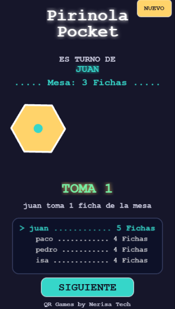

EN DESARROLLO
QRGames · Pirinola Pocket
Pirinola Pocket es una versión web del juego de pirinola pensada para jugar directamente desde el navegador en dispositivos móviles, sin instalar una aplicación. La demo está desarrollada con JavaScript y Phaser e implementa mecánicas por turnos, manejo de jugadores, estados del juego y una interfaz pensada para celular.
JavaScriptPhaserHTML / CSSJuego por turnosWeb móvil
Actualmente continúo experimentando con nuevas experiencias para QRGames; la demo publicada de Pirinola Pocket corresponde a esta versión en JavaScript + Phaser.
